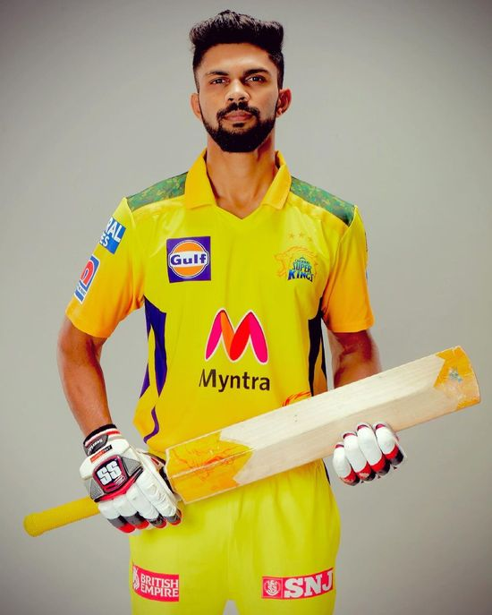
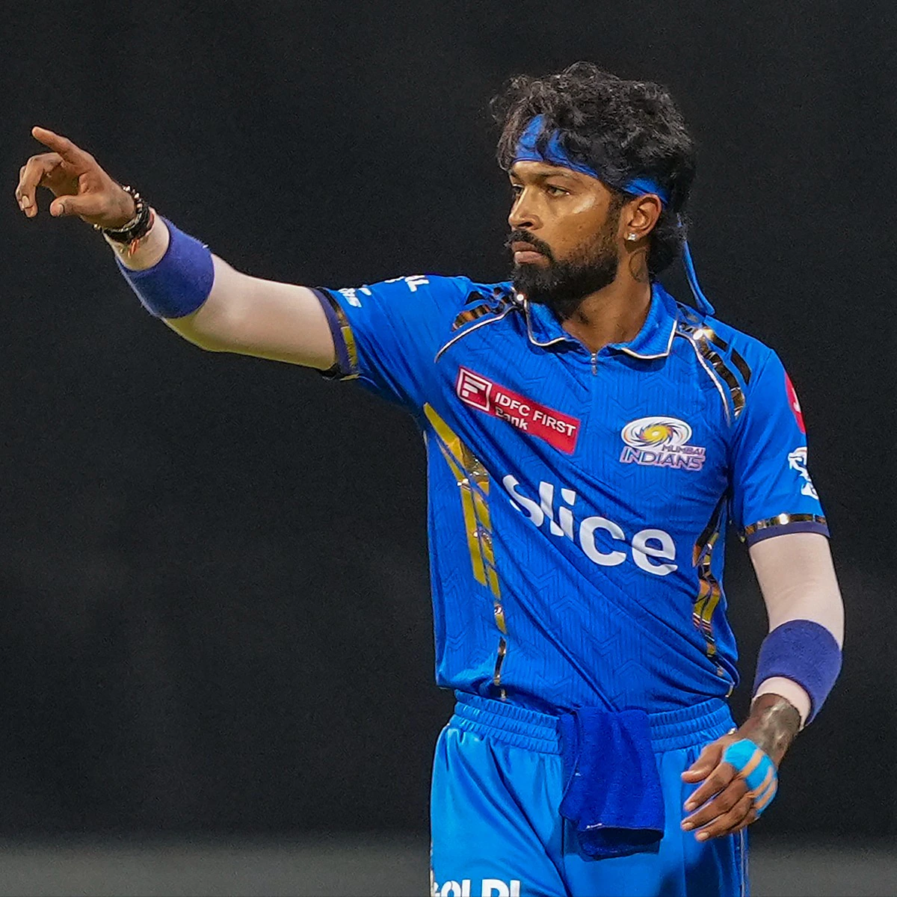
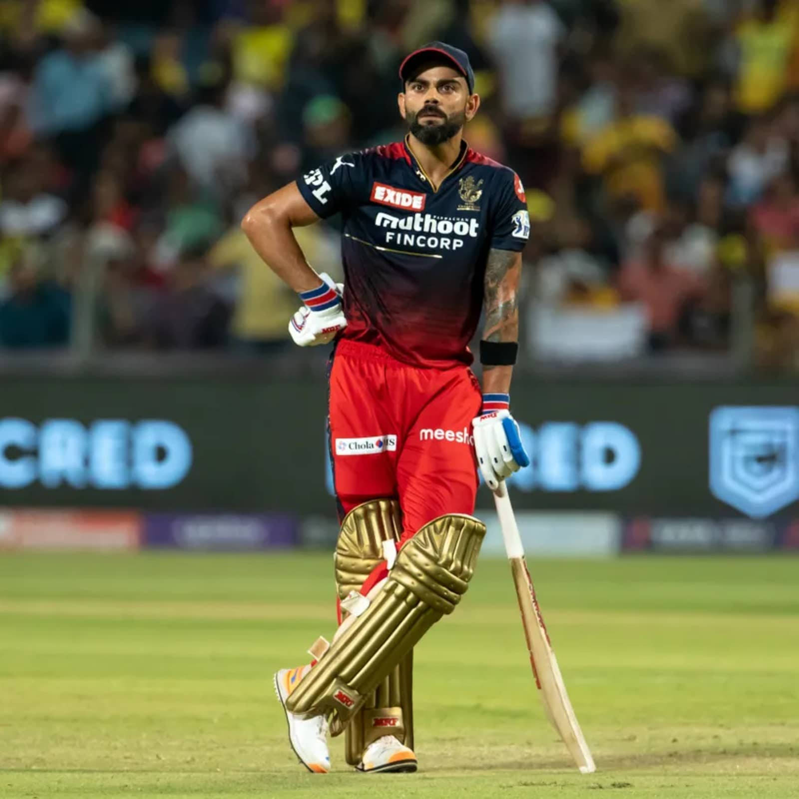
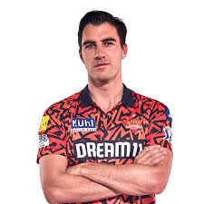
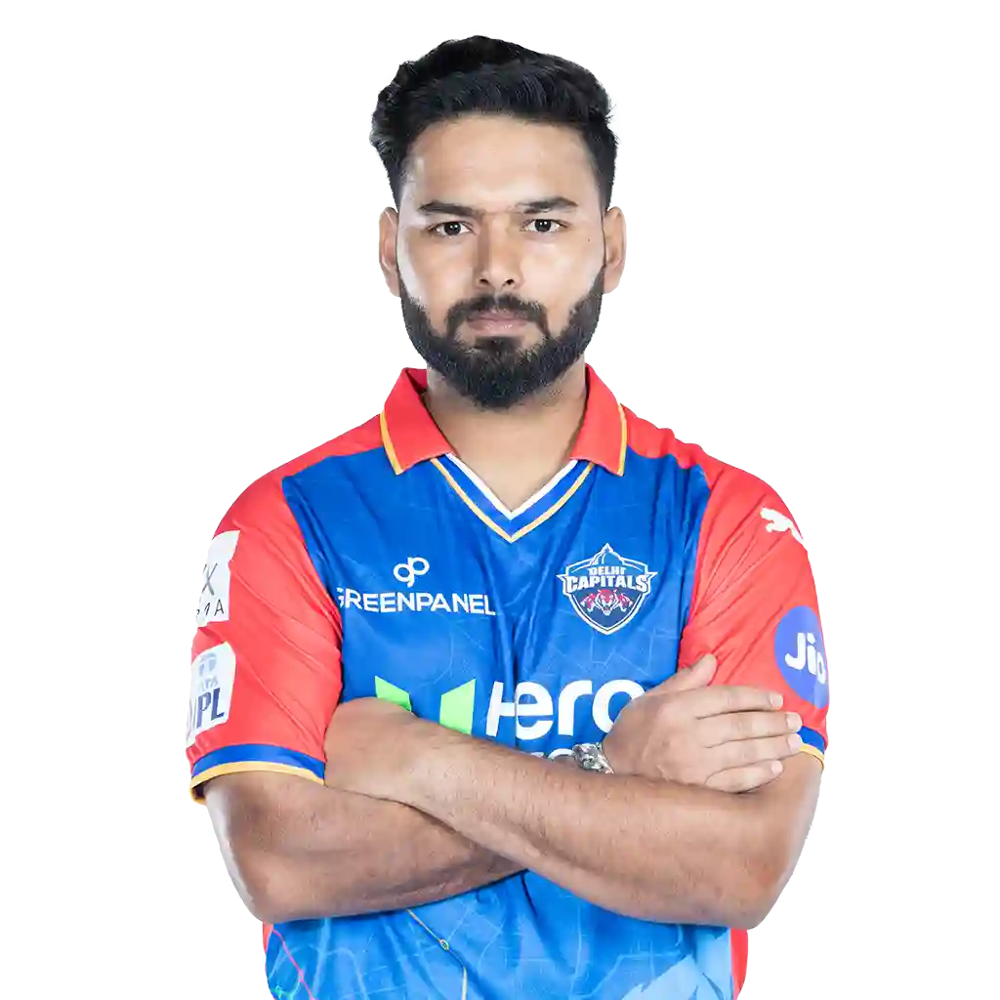
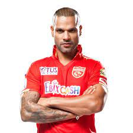
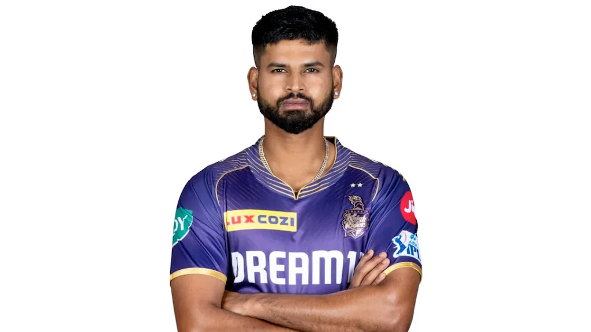
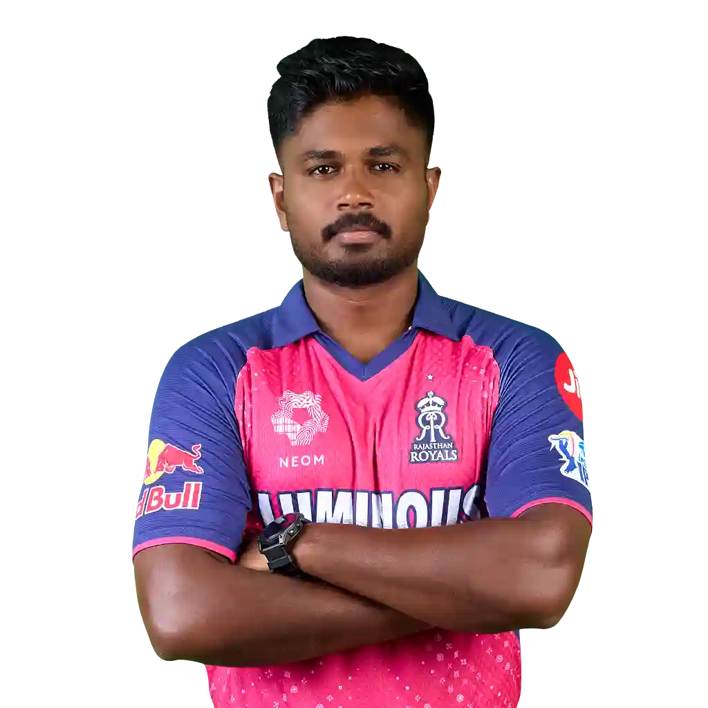
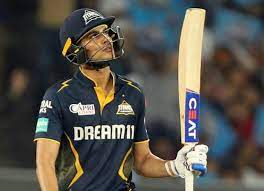
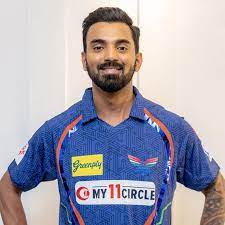

About:Ruturaj Gaikwad has taken over as Chennai Super Kings (CSK) captain for the 2024 IPL season, succeeding MS Dhoni. Gaikwad, known for his steady performance since 2019, is set to lead with the support of experienced players like Dhoni, Ravindra Jadeja, and Ajinkya Rahane. He expressed enthusiasm and confidence about the new role, looking forward to continuing CSK's strong legacy

About:Hardik Pandya started his IPL career with the Mumbai Indians, playing a crucial role in their multiple title wins with his powerful batting and effective bowling. In 2022, he became the captain of Gujarat Titans and led them to an IPL title in their debut season, showcasing his leadership and all-round abilities. His contributions as both a player and captain have made him a key figure in the league.

About:A powerful batsman, Kohli has been the face of Royal Challengers Bangalore for years. Known for his aggressive style and passion for the game, he led RCB until 2021 and briefly returned as captain in 2023, bringing high energy and experience to the team.

About:The Australian fast bowler brings his international captaincy experience to Sunrisers Hyderabad. Cummins is valued for his disciplined bowling and strategic mindset, making him an asset to SRH.

About:Known for his explosive batting, Pant has been Delhi Capitals' captain since 2021. His fearless approach and evolving leadership skills have added excitement to the team’s dynamic.

About:A seasoned opener, Dhawan took over as captain of Punjab Kings, providing stability and experience. His calm demeanor and consistent batting help PKB in crunch situations.

About:Iyer, known for his composed batting and strong decision-making, was appointed Kolkata Knight Riders' captain in 2022. His leadership is marked by adaptability and focus.

About:The wicketkeeper-batsman for Rajasthan Royals, Samson brings a mix of aggression and finesse. His role as captain since 2021 has been pivotal in leading RR with flair.

About:A rising star, Gill leads Gujarat Titans after Hardik Pandya. His refined batting technique and calm presence make him a promising young captain.

About:An established batsman, Rahul captains Lucknow Super Giants, known for his consistency and ability to anchor the innings. His strategic approach benefits LSG in crucial matches.